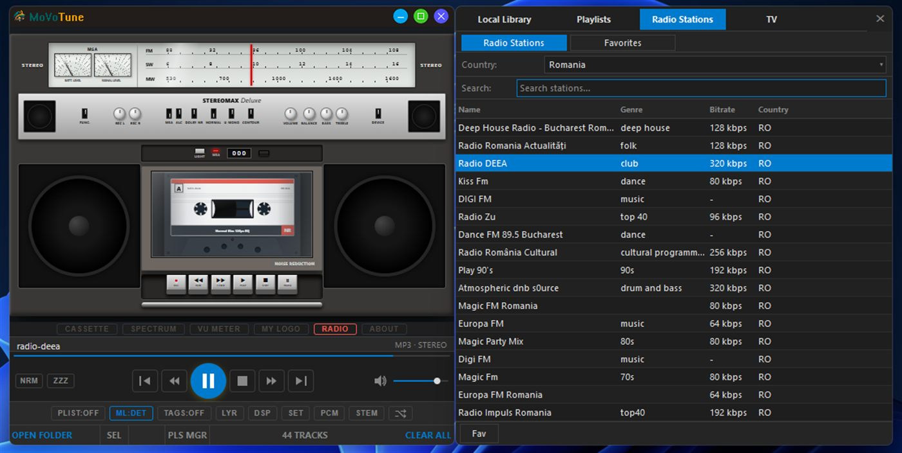
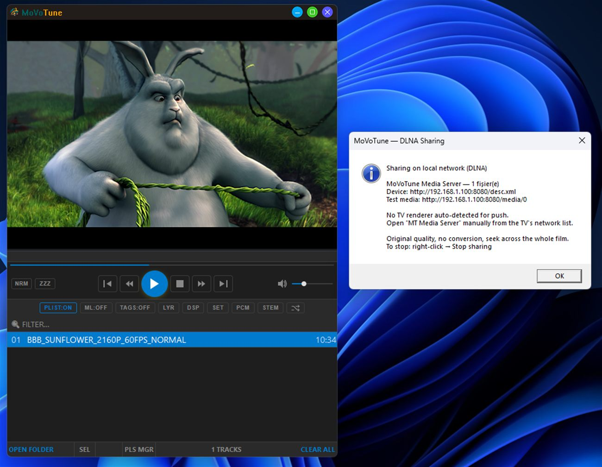
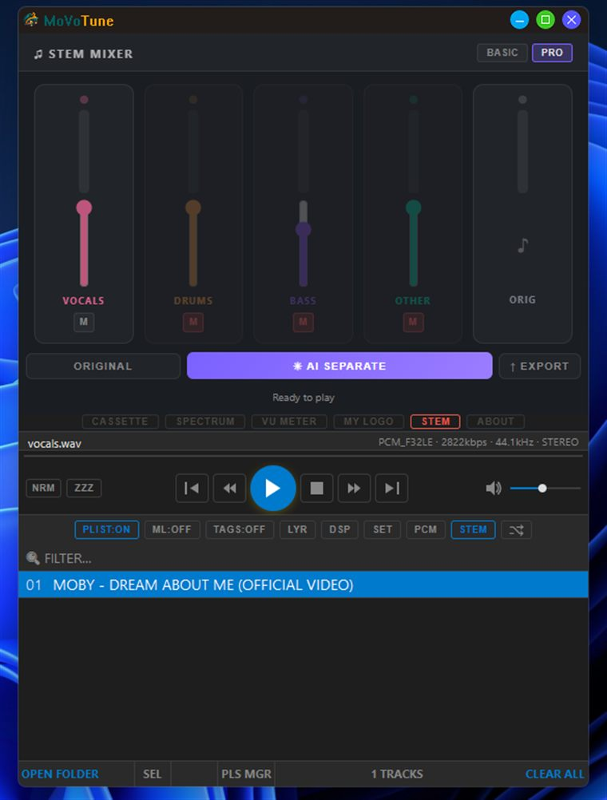

One player for everything you watch and listen to.
Un singur player pentru tot ce asculți și privești.
MoVoTune plays your films and your music with real subtitles, synced lyrics, retro visualizers and a proper 10-band equalizer — then streams it all to your TV. No accounts, no ads, no telemetry.
MoVoTune redă filmele și muzica ta cu subtitrări reale, versuri sincronizate, vizualizatoare retro și un egalizator serios cu 10 benzi — apoi trimite totul către televizor. Fără conturi, fără reclame, fără telemetrie.
Basic is fully offline and free. Pro adds the advanced engines and online features — coming to the Store. Basic funcționează complet offline și e gratuit. Pro adaugă motoarele avansate și funcțiile online — în curând în Store.

Built like a real media player
Construit ca un player adevărat
A native Windows application written in Rust — small, fast, and it starts instantly. Features marked PRO are part of the Pro edition.
O aplicație nativă Windows scrisă în Rust — mică, rapidă și pornește instant. Funcțiile marcate PRO fac parte din ediția Pro.
Video that just plays
Video care pur și simplu merge
Multiple playback engines (Media Foundation, DirectShow, and libmpv / SuperNova in Pro) so odd files still open. Correct letterboxing in windowed and fullscreen mode.
Mai multe motoare de redare (Media Foundation, DirectShow și libmpv / SuperNova în Pro), ca să se deschidă și fișierele dificile. Încadrare corectă în fereastră și pe ecran complet.
Subtitles done properly
Subtitrări făcute ca lumea
Local .srt and .ass with font, size, colour and timing offset controls. Online subtitle search via OpenSubtitles.PRO
Fișiere locale .srt și .ass, cu control pe font, dimensiune, culoare și decalaj de sincronizare. Căutare online prin OpenSubtitles.PRO
10-band EQ & DSP
Egalizator cu 10 benzi și DSP
A true PCM-level equalizer with preamp, applied inside the audio pipeline — not a fake slider. WASAPI exclusive bitstream passthrough.PRO
Egalizator real la nivel PCM, cu preamplificare, aplicat în lanțul audio — nu un slider decorativ. Bitstream exclusiv WASAPI.PRO
Visualizers with character
Vizualizatoare cu personalitate
Cassette deck, boombox, spectrum analyser and VU meters — animated skins that react to the music, plus your own logo.
Casetofon, boombox, analizor de spectru și VU-metre — skinuri animate care reacționează la muzică, plus logo-ul tău.
AI stem separationPRO
Separare AI pe pistePRO
Split any track into vocals, drums, bass and other — locally, on your machine. Mute the vocals for karaoke, or export the stems.
Împarte orice piesă în voce, tobe, bas și restul — local, pe calculatorul tău. Dezactivează vocea pentru karaoke sau exportă pistele.
Stream to your TVPRO
Trimite pe televizorPRO
Built-in DLNA/UPnP server shares the file at original quality, no re-encoding, with full seeking across the whole film.
Server DLNA/UPnP integrat: partajează fișierul la calitatea originală, fără reconversie, cu derulare pe tot filmul.
Synced lyricsPRO
Versuri sincronizatePRO
Line-by-line lyrics from LRCLIB and Genius, matched to the track that is playing.
Versuri rând cu rând de la LRCLIB și Genius, potrivite cu piesa care rulează.
Radio, TV & libraryPRO
Radio, TV și bibliotecăPRO
Media library with playlists, internet radio by country, your own M3U/IPTV lists, and film info from OMDb.
Bibliotecă media cu playlisturi, radio online pe țări, listele tale M3U/IPTV și informații despre filme de la OMDb.
31 languages
31 de limbi
The whole interface is translated, Romanian and English included. Themes, fonts and Explorer integration: “Play with MoVoTune”.
Toată interfața e tradusă, inclusiv română și engleză. Teme, fonturi și integrare în Explorer: „Play with MoVoTune”.
Two editions, one app
Două ediții, aceeași aplicație
Start free. Basic is a complete offline player — nothing is time-limited and nothing expires.
Începe gratuit. Basic e un player offline complet — nimic nu e limitat în timp și nimic nu expiră.
MoVoTune Basic
- Local video & audio playback (Media Foundation, DirectShow, Mix engine)
- Redare video și audio locală (Media Foundation, DirectShow, motorul Mix)
- Local .srt / .ass subtitles with full styling controls
- Subtitrări locale .srt / .ass, complet configurabile
- Playlists, tag editor, themes and fonts
- Playlisturi, editor de etichete, teme și fonturi
- Cassette, spectrum, VU meter and custom-logo visualizers
- Vizualizatoare: casetă, spectru, VU-metru și logo personalizat
- 10-band equalizer and DSP
- Egalizator cu 10 benzi și DSP
- 31 interface languages · Explorer context menu
- 31 de limbi în interfață · meniu contextual în Explorer
- No network access at all — the Basic build declares no network capabilities
- Fără acces la rețea — ediția Basic nu declară nicio capabilitate de rețea
MoVoTune Pro
- Everything in Basic, plus:
- Tot ce are Basic, plus:
- Advanced engines — libmpv, SuperNova, NovaGC, Nova3D, Nova360VR, DS Reloaded
- Motoare avansate — libmpv, SuperNova, NovaGC, Nova3D, Nova360VR, DS Reloaded
- AI stem separation (vocals / drums / bass / other) with export
- Separare AI pe piste (voce / tobe / bas / restul), cu export
- SuperNova engine — CNN-based 2.5D depth rendering for ordinary 2D films, plus HDR tone mapping, deband and frame interpolation · 360° VR playback
- Motorul SuperNova — randare 2.5D cu adâncime, bazată pe CNN, pentru filme 2D obișnuite, plus tone mapping HDR, deband și interpolare de cadre · redare 360° VR
- DLNA/UPnP streaming to TVs at original quality
- Streaming DLNA/UPnP către televizoare, la calitatea originală
- Media library, internet radio, IPTV lists, OMDb film info
- Bibliotecă media, radio online, liste IPTV, informații OMDb
- Online subtitle search, synced lyrics, waveform seekbar, Shader Hub
- Căutare online de subtitrări, versuri sincronizate, seekbar cu formă de undă, Shader Hub
Note: MoVoTune does not host, curate or verify third-party TV, radio or IPTV streams. Those features simply play lists you or a public directory provide, and you are responsible for the legality of the sources you add. Notă: MoVoTune nu găzduiește, nu selectează și nu verifică fluxurile TV, radio sau IPTV ale terților. Aceste funcții doar redau liste furnizate de tine sau de un director public, iar responsabilitatea pentru legalitatea surselor adăugate îți aparține.
A look at it
Cum arată
Screenshots from the Pro edition on Windows 11.
Capturi din ediția Pro, pe Windows 11.


Your files stay yours
Fișierele tale rămân ale tale
No accounts, no ads, no analytics, no telemetry. Settings live in your own Windows profile. Basic never touches the network; Pro contacts a service only when you use the feature that needs it, and sends only the title you are searching for.
Fără conturi, fără reclame, fără analytics, fără telemetrie. Setările stau în profilul tău Windows. Basic nu atinge deloc rețeaua; Pro contactează un serviciu doar când folosești funcția respectivă și trimite doar titlul căutat.